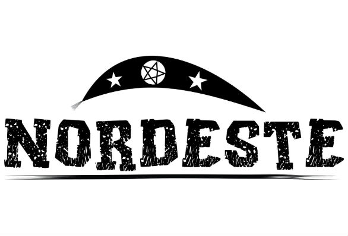

LETRA ***C***
Caceteiro = Adjetivo para aquele que gosta de brigar; jogador que faz faltas.
Cambito = Perna fina.
Cipuada = Pancada forte.
Cabra = Referência genérica a uma pessoa, em geral do sexo masculino. "Cabra bom".
Cão chupando manga = Diz-se de pessoa corajosa, destemida.
Catota = Secreção nasal; meleca.
Caixa-prego = Referência a lugar distante, mais próximo do que as brenhas.
Chapa = Peça feita por protético ou radiografia do pulmão.
Chapéu de touro = Diz-se da pessoa que mantém relacionamento com infiel.
Correr frouxo = Diz-se de algo que se tem em abundância.
Confeito = Bala (de comer, não o projétil).
Cotoco = Um pedaço. Pode ser referência a um órgão do corpo amputado. "Perdeu parte do braço e ficou com um cotoco".
Catraia = Mulher feia ao extremo (Convém não comentar com a própria).
Cabrita = Menina ou menina-moça.
Caixa-dos-peito = Caixa toráxica.
Cangalha = Pessoa com as pernas arqueadas.
Carão = Repreensão; bronca.
Caritó = Diz-se de mulher que não conseguiu casar. "Ela ficou no caritó".
Catombo = Se for na cabeça é um galo, mas pode ser usado em qualquer parte do corpo ou superfície; calombo.
Cocorote = Cascudo.
Conxambrança = Acordo entre duas ou mais pessoas, com objetivo maldoso.
Corta-jaca = Intermediário de namorados.
Cavalo-do-cão = Pessoa que se propõe a fazer tudo; pessoa com planos de abraçar o mundo; também diz de quem conta vantagem.
Voltar